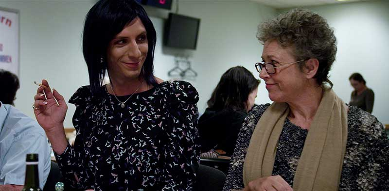
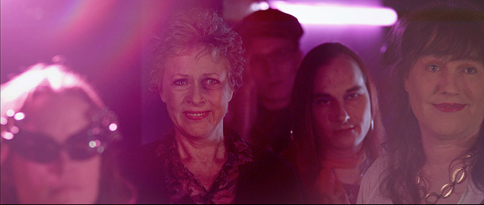

| dunst recommends: LADYBOY | 2013 |
  Filminstruktøren Aske Bang har lavet en kortfilm ”LADYBOY”, der lige nu ligger nummer 1 på Filmmagasinet Ekkos shortliste.Titlen ”Ladyboy” refererer til navnet på den natklub, hvor hovedpersonen hænger ud og spiller i band. Instruktøren er udmærket opmærksom på forskellen imellem transvestit og ladyboy. Kort resume af filmen: SE HELE FILMEN HER: http://www.ekkofilm.dk/shortlist/film/ladyboy/ (30:45 min.)Se flere artikler om ”Ladyboy” og instruktøren Aske Bang: |
|
| www.dunst.dk |